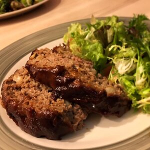

Glazed Meatloaf I

This is a succulent meatloaf glazed with a sweet and sour sauce that
everyone will enjoy!
Ingredients:
- ½ cup ketchup
- ⅓ cup brown sugar
- ¼ cup lemon juice, divided
- 1 teaspoon mustard powder
- 2 pounds ground beef
- 3 slices bread, broken up into small pieces
- ¼ cup chopped onion
- 1 egg, beaten
- 1 teaspoon beef bouillon granules
Steps:
- Preheat oven to 350 degrees F (175 degrees C).
-
In a small bowl, combine the ketchup, brown sugar, 1 tablespoon lemon
juice and mustard powder.
-
In a separate large bowl, combine the ground beef, bread, onion, egg,
bouillon, remaining lemon juice and 1/3 of the ketchup mixture from the
small bowl. Mix this well and place in a 5x9 inch loaf pan.
-
Bake at 350 degrees F (175 degrees C) for 1 hour, drain any excess fat,
coat with remaining ketchup mixture and bake for 10 more minutes.